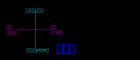

无人机并不是自动驾驶飞机，还是需要有人控制的
控制无人机的方法很多，最传统的就是遥控器了，此外地面站用的数传电台。另外还有不是特别主流的蓝牙、wifi、3G/4G等。
遥控器
无人机遥控器一般成对出售，一个发射机，一个接收机。他们需要配对使用，不同厂家的发射机和接收机有可能没法通用，在购买时需要确认他们之间的协议是否一致。
发射机上装有摇杆，旋钮，开关等器件，飞手通过调整发射机上的这些器件来远程控制无人机。飞手给出的控制命令由接收机接收，接收机与飞控相连将信号转递给飞控。
大部分的遥控器工作在2.4Ghz的频段，这也是最通用的频段了。新的跳频技术出来后，2.4GHz已经成为遥控器的标准了。跳频技术会自动选择可用的通道，而避免与其他遥控器相互干扰，允许多个飞手同一时间驾驶各自的飞机。
如果需要传输距离很远也可以选用低一些的频段，比如433MHz、900MHz等。高频的遥控器传输距离近，但是可以把天线做的更小些，更加便捷，适合用在小的无人机。
同一档次的遥控器的价格主要跟遥控器的通道数挂钩，通道就是遥控器可以控制的动作路数，比如要控制飞机上下飞，那就需要一个通道，控制飞机左右飞，那还需要另外一个通道。四轴飞机的话至少需要4个通道：上下、左右、前后、旋转。如果有额外的通道的话就可以配置些模式切换，一键起飞等功能。
以前的接收机是直接输出PWM信号给飞控的，一个通道一个PWM，这样飞机上的线路会比较臃肿。现在流行直接用PPM或者串口协议与飞控相连，这样只需要一个信号线，外加电源线和地线总共三根线就能传输所有通道的数据了。也有将接收机直接集成到飞控上的方案，但是买这种飞控的是千万要注意接收机跟你的发射机能否匹配。
遥控器还有一个美国手、日本手之说。美国手与日本手是指无人机的操控方式，美国手是左手油门，日本手是右手油门，对应不同的操控器油门方向杆的不同布局。
美国手，又称左手油门。左边杆的上升和下降对应油门的加减，右边杆的上下对应升降舵。
日本手，又称右手油门。与美国手相反，左边杆的上下控制升降舵而右边杆则控制油门的加减。

两种操作方式并无好坏、难易之分，只不过不同人习惯不同罢了。如果你不知道如何选择的话，就选美国手吧，用的人多，淘汰以后也更好出手
数传电台
数传电台一般跟地面站配合使用，也是成对出售，一个发射机，一个接收机。
发射机一般有USB口，插在电脑上，电脑里运行着地面站软件，地面站通过发射机发送控制指令给接收机，接收机也同样连接到飞控上将指令数据传给飞控。
与遥控器不一样的地方是数传的数据传输可以是双向的，不光是地面站控制飞机，飞机也可以将实时的飞行数据发送回来给地面站做实时分析处理。
数传电台的通讯距离取决于很多因素：如发射功率、频段、接收灵敏度、抗干扰性能、数据传输速率、天线架设高度、天线增益、馈线损耗、电磁环境、地形特征、天气状况、是否采用中继等，
而功率和频段是无人机数传电台的主要指标。一般来说，功率越高，传输距离越远，信号越稳定。频段越高，传输速率越快，单穿透力不强，传输距离近。频段越低，传输速率相对较低，但是传输距离相对较远。
某宝上现主流的功率有100w和500w两种，主流的频率有433MHz和915MHz。
Wifi
Wifi这种遥控方式也经常在玩具四轴上出现，用手机或者电脑和飞机在同一个局域网内进行控制。
DIY的时候也有现成的Wifi模块可以用，留有串口与飞控通信，PX4上面有一款飞控就是用了这种方式。
这种方式主要在室内飞，网络环境很重要。
蓝牙
蓝牙这种遥控方式经常在玩具四轴上出现，用手机蓝牙连上直接控制。
DIY的话也有相应的模块可以用，大小和接口跟蓝牙模块相同，硬件可以通用。
这种方式适合用在小飞机上，近距离飞飞。
3G/4G/5G
通过运营商网络进行遥控有点开脑洞，主要是网络延时会导致控制命令的滞后。不过随着移动网络的速率越来越快，这种方式也慢慢变得可行。
貌似大疆有款无人机就可以直接通过这种方式进行控制，飞机上有个卡槽，插上自己买的sim就可以了。
也有发现有人用4G做数传模块的，不过都是小范围的使用，没有大面积推广。
不过随着运营商5G网络部署到位，通过5G来遥控无人机可能会是一个很好的方式。前段时间就有无人机通过5G航拍直播钱塘江大潮来着。
用运营商网络有个好处就是不容易飞丢，毕竟运营商的网络覆盖率还是杠杠的。
Comments
There are no comments yet.